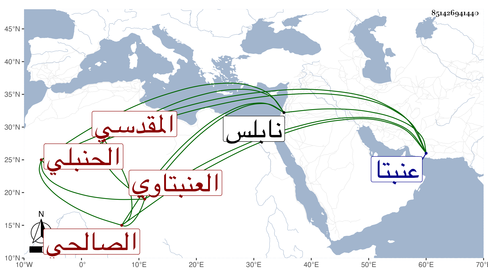

0902Sakhawi.DawLamic.ITO20230111-ara1.EIS1600.851426941440
Biography ID: 851426941440
أحمد بن عبد الرحمن بن حمدان بن حميد بالتكبير الشهاب بن الزين العنبتاوي بفتح النون وإسكان الموحدة بعدها فوقانية نسبة إلى عنبتا قرية من عمل نابلس المقدسي الصالحي الحنبلي أخو إبراهيم الماضي . ولد تقريبا سنة ست وسبعين وسبعمائة وسمع من المحب الصامت وأبي الهول وغيرهما وحدث سمع منه الفضلاء كابن فهد وتكسب بالشهادة . مات في سابع عشر رمضان سنة إحدى وأربعين مطعونا .
